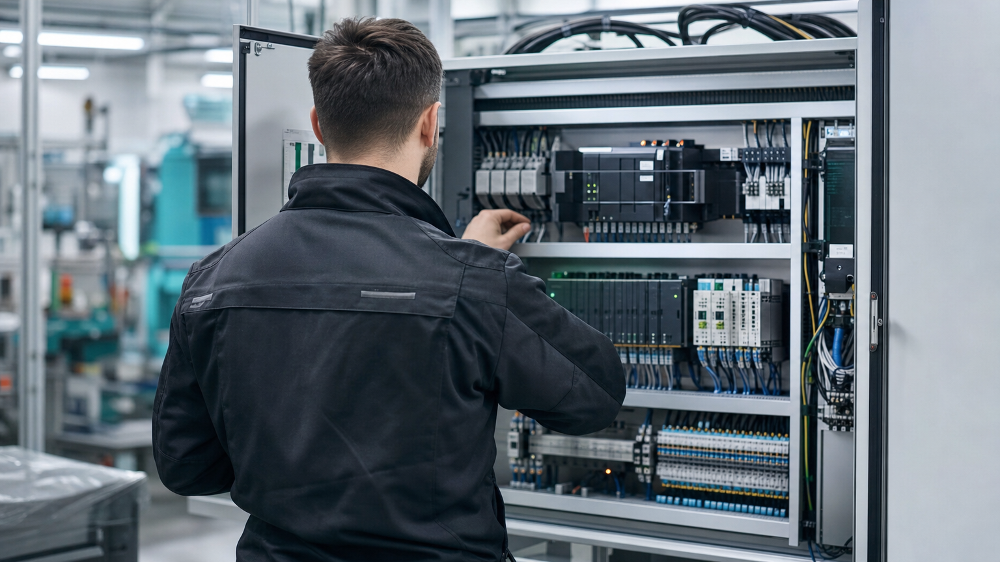

Diagnòstic i reparació
Localització de l'origen real de l'avaria —elèctrica, electrònica, pneumàtica o de control— i reparació amb garantia de funcionament.

Diagnòstic ràpid, reparació eficaç i seguiment proper. El nostre SAT està pensat perquè les vostres màquines tornin a produir al més aviat possible i perquè les avaries no es repeteixin.
Atenem maquinari i instal·lacions d'automatització de qualsevol marca, amb un únic interlocutor per a tot el que necessiteu.
Localització de l'origen real de l'avaria —elèctrica, electrònica, pneumàtica o de control— i reparació amb garantia de funcionament.
Plans de revisió periòdica adaptats al ritme de la vostra planta i actuacions correctives ràpides quan apareixen incidències.
Assessorament immediat per telèfon i connexió remota quan és possible: moltes incidències es resolen sense desplaçament.
Identificació i subministrament de recanvis i components, amb alternatives equivalents quan els originals ja no estan disponibles.
Revisió de l'estat de les instal·lacions, auditories de línies i informes amb propostes de millora prioritzades.
Quan reparar ja no surt a compte, us proposem retrofits i actualitzacions que allarguen la vida útil de l'equipament.
Un pla de manteniment preventiu redueix les parades no programades, allarga la vida del maquinari i us dóna previsibilitat sobre els costos de manteniment.
Dissenyem el pla a mida de la vostra planta: freqüència de revisió, punts de control, registres d'intervenció i recomanacions d'estoc de recanvis crítics.
Demaneu una proposta de manteniment
Truqueu-nos al +34 699 28 07 42 o deixeu-nos un missatge i us respondrem al més aviat possible.